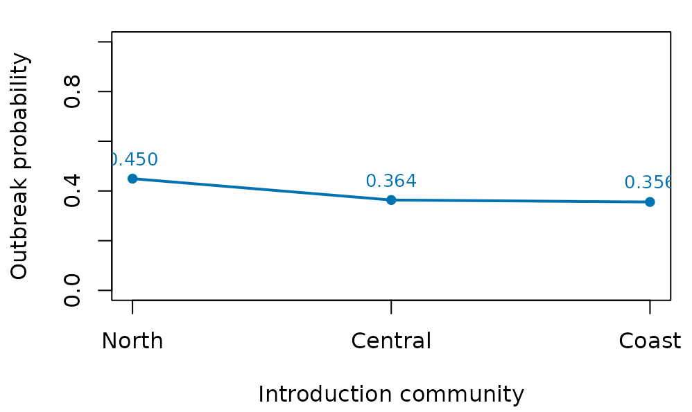
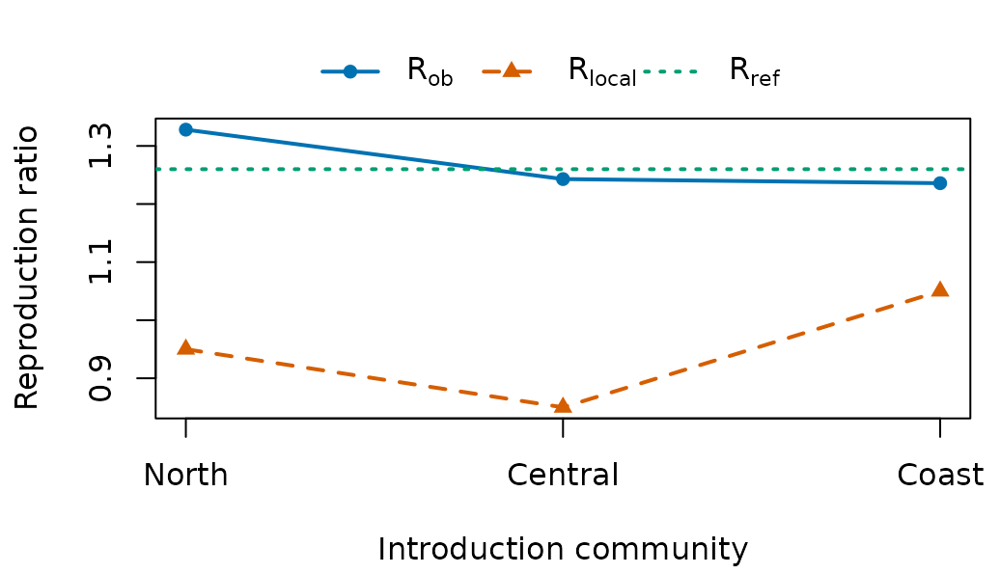
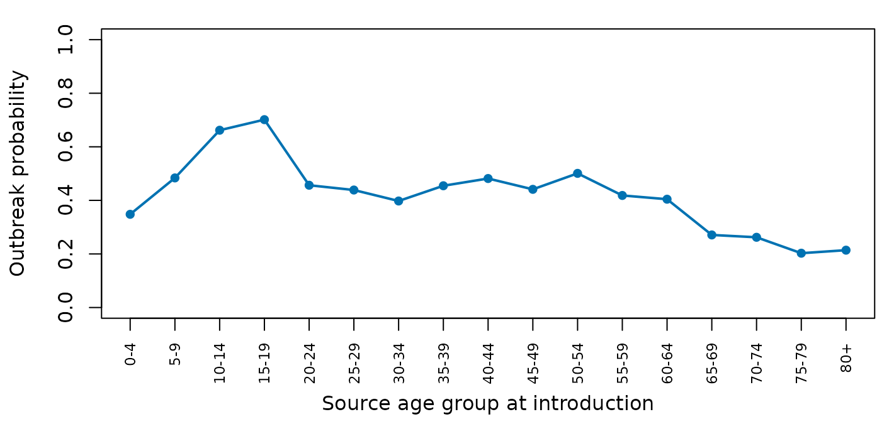
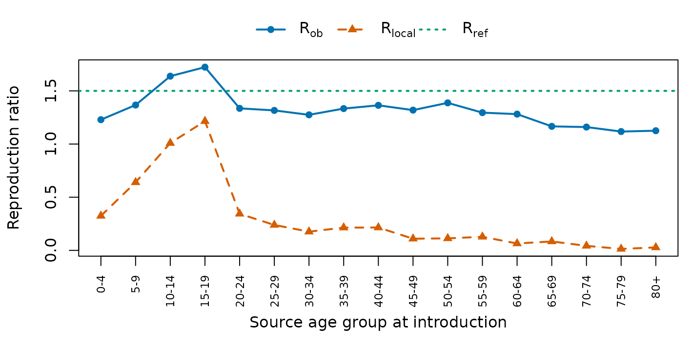

Routbreak: A practical tutorial on outbreak risk in connected populations
Source:vignettes/routbreak-practical-tutorial.Rmd
routbreak-practical-tutorial.Rmd1. Introduction and installation
What does Routbreak calculate?
Routbreak describes early epidemic emergence when population groups are connected. Given a reproduction matrix, it calculates:
- the probability that an introduction produces a non-extinct transmission chain;
- the introduction-specific outbreak reproduction ratio,
R_ob; - local and total reproduction for each group; and
- the system-level reference reproduction ratio,
R_ref.
Throughout Routbreak, rows are infection destinations and
columns are infection sources. Thus R[i, j] is the
expected number of infections in destination group i
produced by one infected individual from source group
j.
Routbreak is not yet available from CRAN. Install it from GitHub with:
install.packages("remotes")
remotes::install_github("peasantxuan/Routbreak")The survey-data example later in this tutorial uses
socialmixr, a suggested package available from CRAN. Its
bundled POLYMOD survey lets the example run offline; Routbreak does not
download or redistribute those records.
2. A minimal reproduction matrix
How is a connected population represented?
Consider three hypothetical communities. The names on both dimensions make the matrix convention explicit.
library(Routbreak)
community <- c("North", "Central", "Coast")
R <- matrix(
c(
0.95, 0.12, 0.05,
0.35, 0.85, 0.12,
0.12, 0.25, 1.05
),
nrow = 3,
byrow = TRUE,
dimnames = list(destination = community, source = community)
)
R
#> source
#> destination North Central Coast
#> North 0.95 0.12 0.05
#> Central 0.35 0.85 0.12
#> Coast 0.12 0.25 1.05Column "North" contains infections generated by a source
case in North. Row "North" contains infections arriving in
North from all three sources. For example,
R["Central", "North"] is the expected number of Central
infections generated by one North source case.
3. Basic Routbreak metrics
What does one introduction imply for each community?
rob_table() calculates the main quantities together,
reusing the outbreak probabilities internally.
risk <- rob_table(R)
risk
#> community outbreak_probability R_ob R_local R_total R_ref
#> 1 North 0.4495513 1.328039 0.95 1.42 1.25996
#> 2 Central 0.3636076 1.242933 0.85 1.22 1.25996
#> 3 Coast 0.3557093 1.235855 1.05 1.22 1.25996Each row corresponds to the source community where infection is introduced:
-
outbreak_probabilityis the probability that the early branching process does not eventually become extinct. It is not the final epidemic size. -
R_obcontrasts offspring production conditional on emergence with offspring production conditional on extinction. -
R_localis the diagonal entry ofR, counting infections that remain in the source community. -
R_totalis the source-column sum, counting infections generated across all destinations. -
R_refis the spectral radius of the complete connected system. It is repeated in each row only to simplify comparison.
The same quantities are available separately through
outbreak_prob(), r_ob(),
r_local(), r_total(), and r_ref()
when only one output is needed.
The introduction locations share one system-level R_ref,
but their outbreak probabilities and R_ob values differ
because they enter different parts of the connected transmission system.
R_local alone misses exported transmission, while
R_total does not account for the future paths reached by
those exported infections.
4. Compare the reproduction metrics
How does outbreak probability vary by introduction community?
local({
old_par <- par(no.readonly = TRUE)
on.exit(par(old_par), add = TRUE)
par(mar = c(4.2, 4.2, 1.2, 0.8))
x <- seq_len(nrow(risk))
plot(
x, risk$outbreak_probability,
type = "o", pch = 16, lwd = 2, col = "#0072B2", xaxt = "n",
ylim = c(0, 1), xlab = "Introduction community",
ylab = "Outbreak probability"
)
axis(1, at = x, labels = risk$community)
text(
x, risk$outbreak_probability,
labels = sprintf("%.3f", risk$outbreak_probability),
pos = 3, cex = 0.82, col = "#0072B2"
)
})
Outbreak probability for an introduction into each community in the hypothetical three-community system.
The probability of epidemic emergence is highest for an introduction
in North and lower for introductions in Central or Coast. These
probabilities differ even though all three communities belong to the
same connected system and therefore share one R_ref.
How do the reproduction ratios differ?
The following plot compares the introduction-specific and local quantities with the common system-level reference value.
local({
old_par <- par(no.readonly = TRUE)
on.exit(par(old_par), add = TRUE)
par(mar = c(4.2, 4.2, 3.2, 0.8))
x <- seq_along(community)
matplot(
x, cbind(risk$R_ob, risk$R_local), type = "o",
pch = c(16, 17), lty = c(1, 2), lwd = 2,
col = c("#0072B2", "#D55E00"), xaxt = "n",
ylim = range(risk[, c("R_ob", "R_local", "R_ref")]),
xlab = "Introduction community", ylab = "Reproduction ratio"
)
abline(h = unique(risk$R_ref), lwd = 2, lty = 3, col = "#009E73")
axis(1, at = x, labels = risk$community)
legend(
"top", inset = c(0, -0.28), xpd = NA, horiz = TRUE,
legend = c(expression(R[ob]), expression(R[local]), expression(R[ref])),
col = c("#0072B2", "#D55E00", "#009E73"), lty = c(1, 2, 3),
pch = c(16, 17, NA), lwd = 2, bty = "n"
)
})
Outbreak, local, and reference reproduction ratios for the hypothetical three-community system.
Overdispersed offspring and reproduction-matrix inference are covered in the negative-binomial and estimation tutorials.
5. Survey-data example: age-structured contacts in Italy
How is the Italian contact matrix constructed?
The POLYMOD study recorded one day of contacts for participants in
eight European countries during 2005–2006. The socialmixr
CRAN package includes version 1.1 of these survey records. Its Italian
subset has 849 participant records. With the explicit missing-age
handling below, 842 participants contribute to the contact matrix.
Participant and contact ages are grouped into 5-year bands from 0–4
through 75–79, plus an 80+ group.
socialmixr::contact_matrix() returns the mean number of
contacts reported by each participant age group in
rows, with contacted age groups in
columns. Thus its matrix has source rows and
destination columns. The call below uses the observed Italian survey
participants within each age band. It does not apply an external
national population distribution, age weights, or a reciprocity
adjustment; the 17 analytic group counts range from 5 to 93
participants.
data("polymod", package = "socialmixr")
italy_contacts <- socialmixr::contact_matrix(
survey = polymod,
countries = "Italy",
age_limits = seq(0, 80, by = 5),
symmetric = FALSE,
estimated_participant_age = "mean",
estimated_contact_age = "mean",
missing_participant_age = "remove",
missing_contact_age = "remove"
)
C_italy <- italy_contacts$matrix
age_group <- c(paste(seq(0, 75, 5), seq(4, 79, 5), sep = "-"), "80+")
dimnames(C_italy) <- list(source = age_group, destination = age_group)
survey_basis <- italy_contacts$participants
available_Italian_participants <- sum(
as.character(polymod$participants$country) == "Italy"
)
data.frame(
available_Italian_participants,
participants_in_contact_matrix = sum(survey_basis$participants),
minimum_per_age_group = min(survey_basis$participants),
maximum_per_age_group = max(survey_basis$participants)
)
#> available_Italian_participants participants_in_contact_matrix minimum_per_age_group
#> 1 849 842 5
#> maximum_per_age_group
#> 1 93How is the contact matrix converted to a reproduction matrix?
For this teaching scenario, every reported contact is assigned the same expected transmission multiplier . Susceptibility, infectiousness, and infectious-period scaling are therefore uniform across age groups. If is the mean number of contacts that a participant in source group reports with destination group , then
The transpose below is required only to convert the documented
socialmixr orientation to Routbreak’s
destination-row/source-column convention. Scaling sets the illustrative
system-level value to R_ref = 1.5; this value is not an
empirical estimate for Italy.
A_italy <- t(C_italy)
dimnames(A_italy) <- list(destination = age_group, source = age_group)
R_italy <- scale_to_rref(A_italy, target = 1.5)
result_italy <- rob_table(R_italy)
print(result_italy, digits = 4)
#> community outbreak_probability R_ob R_local R_total R_ref
#> 1 0-4 0.3480 1.229 0.32438 1.0425 1.5
#> 2 5-9 0.4838 1.367 0.63994 1.4084 1.5
#> 3 10-14 0.6619 1.638 1.00923 1.8582 1.5
#> 4 15-19 0.7014 1.723 1.21507 1.9766 1.5
#> 5 20-24 0.4565 1.336 0.34398 1.3380 1.5
#> 6 25-29 0.4387 1.316 0.23897 1.2970 1.5
#> 7 30-34 0.3977 1.275 0.17607 1.1521 1.5
#> 8 35-39 0.4546 1.334 0.21415 1.3703 1.5
#> 9 40-44 0.4816 1.364 0.21501 1.4322 1.5
#> 10 45-49 0.4412 1.319 0.10976 1.2397 1.5
#> 11 50-54 0.5008 1.387 0.11296 1.3838 1.5
#> 12 55-59 0.4184 1.295 0.12777 1.2328 1.5
#> 13 60-64 0.4043 1.281 0.06489 1.1814 1.5
#> 14 65-69 0.2710 1.166 0.08417 0.7848 1.5
#> 15 70-74 0.2622 1.160 0.04266 0.7572 1.5
#> 16 75-79 0.2028 1.118 0.01386 0.5684 1.5
#> 17 80+ 0.2141 1.125 0.02773 0.5823 1.5Each entry of R_italy is the expected number of
infections in a destination age group generated by an infected source
age group under this uniform per-contact scenario. Routbreak calculates
outbreak probability, R_ob, R_local,
R_total, and the common R_ref for each
introduction group.
Does the generated matrix pass the required checks?
diagnostics_italy <- matrix_diagnostics(R_italy)
r_ref(R_italy)
#> [1] 1.5
is_irreducible(R_italy)
#> [1] TRUE
unique(diagnostics_italy[c(
"component_size", "cyclic_period", "primitive_component",
"matrix_irreducible"
)])
#> component_size cyclic_period primitive_component matrix_irreducible
#> 1 17 1 TRUE TRUE
italy_metrics <- c("outbreak_probability", "R_ob", "R_local", "R_total")
italy_summary <- t(vapply(
result_italy[italy_metrics],
function(x) c(minimum = min(x), maximum = max(x), sd = sd(x)),
numeric(3)
))
italy_summary
#> minimum maximum sd
#> outbreak_probability 0.20278461 0.701367 0.1364766
#> R_ob 1.11759164 1.723120 0.1607619
#> R_local 0.01386387 1.215069 0.3460406
#> R_total 0.56841873 1.976592 0.3874185
italy_spearman <- cor(
result_italy[italy_metrics],
method = "spearman"
)
round(italy_spearman, 3)
#> outbreak_probability R_ob R_local R_total
#> outbreak_probability 1.000 1.000 0.777 0.985
#> R_ob 1.000 1.000 0.777 0.985
#> R_local 0.777 0.777 1.000 0.801
#> R_total 0.985 0.985 0.801 1.000The generated matrix is irreducible and primitive, with spectral
radius 1.5. r_ref() confirms the requested system-level
normalization; is_irreducible() confirms that every age
group can reach every other through positive transmission paths.
matrix_diagnostics() additionally reports one strongly
connected component with cyclic period 1, so the matrix is primitive. It
produces genuine age-type variation: outbreak probability ranges from
0.203 to 0.701, R_ob from 1.118 to 1.723,
R_local from 0.014 to 1.215, and R_total from
0.568 to 1.977. These rounded values are calculated by the preceding
code when the optional package is available.
For these 17 groups, Spearman’s rank correlation is 0.985 between
outbreak probability and R_total, and 0.777 between
outbreak probability and R_local. Outbreak probability and
Poisson R_ob have rank correlation 1 because
R_ob = -log(1-p)/p is strictly increasing for positive
.
R_ref is constant and therefore has no defined rank
correlation with the age-specific metrics.
How does outbreak probability vary by introduction age group?
local({
old_par <- par(no.readonly = TRUE)
on.exit(par(old_par), add = TRUE)
par(mar = c(4.8, 4.2, 1.2, 0.8))
x_age <- seq_len(nrow(result_italy))
plot(
x_age, result_italy$outbreak_probability,
type = "o", pch = 16, lwd = 2, col = "#0072B2", xaxt = "n",
ylim = c(0, 1), xlab = "Source age group at introduction",
ylab = "Outbreak probability"
)
axis(
1, at = x_age, labels = result_italy$community,
las = 2, cex.axis = 0.72
)
})
Illustrative outbreak probability by introduction age group after scaling the Italian POLYMOD contact matrix to a reference reproduction ratio of 1.5.
The reproduction matrix has one common system-level
R_ref of 1.5, but its survey-derived age-contact structure
gives different introduction age groups different probabilities of
epidemic emergence. These are illustrative model outputs under uniform
per-contact transmission, not measured age-specific risks for a
particular epidemic.
How do the age-specific reproduction ratios compare?
local({
old_par <- par(no.readonly = TRUE)
on.exit(par(old_par), add = TRUE)
par(mar = c(4.8, 4.2, 3.2, 0.8))
x_age <- seq_len(nrow(result_italy))
matplot(
x_age, result_italy[c("R_ob", "R_local")], type = "o",
pch = c(16, 17), lty = c(1, 2), lwd = 2,
col = c("#0072B2", "#D55E00"), xaxt = "n",
ylim = range(result_italy[c("R_ob", "R_local", "R_ref")]),
xlab = "Source age group at introduction", ylab = "Reproduction ratio"
)
abline(h = unique(result_italy$R_ref), lwd = 2, lty = 3, col = "#009E73")
axis(1, at = x_age, labels = result_italy$community, las = 2, cex.axis = 0.72)
legend(
"top", inset = c(0, -0.25), xpd = NA, horiz = TRUE,
legend = c(expression(R[ob]), expression(R[local]), expression(R[ref])),
col = c("#0072B2", "#D55E00", "#009E73"),
lty = c(1, 2, 3), pch = c(16, 17, NA), lwd = 2, bty = "n"
)
})
Age-specific outbreak and local reproduction ratios for the illustrative Italian POLYMOD scenario. The horizontal line is the chosen system-level reference reproduction ratio of 1.5.
R_local counts infections that remain within the source
age group. R_ob uses the entire age-connected system and
conditions on whether transmission survives. The common
R_ref remains a property of the full 17-group matrix.
Assumptions. This example uses an unsymmetrized mean contact matrix from the Italian POLYMOD survey sample and a Poisson multitype branching process. It assumes a common transmission contribution per reported contact and uniform susceptibility, infectiousness, and duration scaling. It does not adjust the survey to a national age distribution. The calculations describe early non-extinction under this illustrative model; they do not estimate final epidemic size or establish empirical age-specific risks for a pathogen or time period.
6. Use your own matrix
What information must a matrix provide?
Supply a finite, nonnegative square matrix with the same unique community identifiers on its destination rows and source columns. Record the time scale, population definitions, and scientific process used to construct every entry.
my_R <- matrix(
c(1.1, 0.2, 0.1, 0.9),
nrow = 2,
byrow = TRUE,
dimnames = list(
destination = c("Group A", "Group B"),
source = c("Group A", "Group B")
)
)
rob_table(my_R)
#> community outbreak_probability R_ob R_local R_total R_ref
#> 1 Group A 0.2915450 1.182215 1.1 1.2 1.173205
#> 2 Group B 0.2396923 1.143266 0.9 1.1 1.173205For long-format data, as_rmatrix() requires explicit
column names and does not interpret missing edges as zero unless
requested.
edges <- data.frame(
source = c("A", "A", "B", "B"),
destination = c("A", "B", "A", "B"),
expected_infections = c(1.1, 0.1, 0.2, 0.9)
)
as_rmatrix(
edges,
source = "source",
destination = "destination",
value = "expected_infections"
)
#> source
#> destination A B
#> A 1.1 0.2
#> B 0.1 0.9Generation-resolved transmission data require a different workflow. See Estimating outbreak reproduction ratios from early transmission data for explicit priors, previous-generation exposure indexing, and posterior credible intervals.
References
- Wang B, Valdano E (2026). Redefining and estimating the early-phase reproduction ratio for epidemic outbreaks in spatially structured populations. PLOS Computational Biology, 22(7), e1014425. https://doi.org/10.1371/journal.pcbi.1014425
- Mossong J, Hens N, Jit M, et al. (2008). Social contacts and mixing patterns relevant to the spread of infectious diseases. PLOS Medicine, 5(3), e74. https://doi.org/10.1371/journal.pmed.0050074
- Mossong J, Hens N, Jit M, et al. (2017). POLYMOD social contact data, version 1.1. Zenodo. https://doi.org/10.5281/zenodo.1157934. Dataset license: CC BY-NC 4.0.